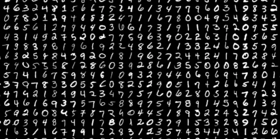
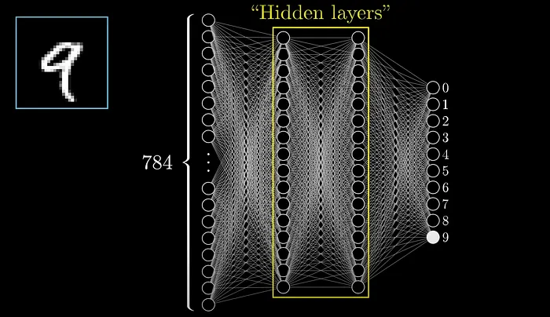
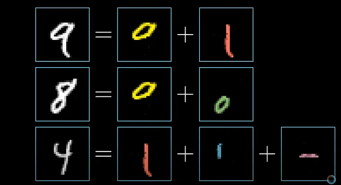
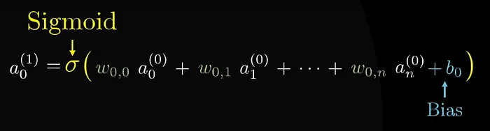
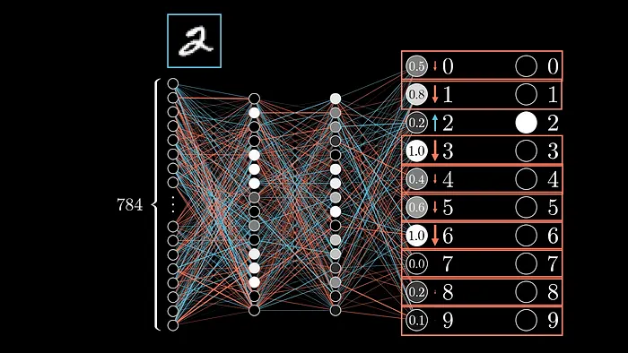

Behind ChatGPT: Understanding Neural Networks Simply
2026.03.15 · Technology
Neural networks are machine learning models inspired by the human brain. They are composed of interconnected artificial neurons organized into layers. They typically consist of an input layer, one or more hidden layers, and an output layer. Each neuron receives information, performs a simple calculation, and then transmits the result to the rest of the network.
For an AI, an image is simply a table of numbers.
To understand how a neural network works in practice, we can take the example of recognizing handwritten digits using the MNIST dataset. This dataset contains thousands of images of handwritten digits, each associated with the correct answer. The digits can be written in different ways, which forces the network to learn to generalize rather than memorize.

Each image in the MNIST dataset is composed of 28 pixels by 28 pixels. To a human, this image immediately represents a number, but to artificial intelligence, it is simply a grid of numerical values. Each pixel is associated with a number between 0 and 1, representing its intensity.
- A light pixel → value close to 1
- A dark pixel → value close to 0
These 784 values constitute the input data for the neural network. The AI does not “see” a number; it reads 784 numbers.
The neural network: a chain of decisions
So far, we have understood the role of the input and output layers. However, the actual prediction of the number does not take place at these levels, but at the heart of the network, in the hidden layers. These are the layers that perform the bulk of the work of analyzing and understanding the image.

The primary role of the hidden layers is to search for patterns in the input data and assess how closely these patterns correspond to a particular digit. A digit can indeed be broken down into simpler elements, such as lines or curves. For example, the digit 8 can be seen as the combination of two loops, while the digit 9 is composed of a loop combined with a line. By learning to recognize these elementary patterns and combine them, the neural network gradually manages to identify the digit represented in the image.

As the image passes through the network, the hidden layers detect these patterns and group them to suggest the most likely digit. By observing and combining these patterns, the network becomes capable of correctly predicting most digits, even when the handwriting varies.
How information circulates: weight, bias and propagation before
The information detected by the hidden layers is then passed to the next layer using parameters called weights and biases. Weights indicate the strength of the connection between two neurons: the higher the weight, the more this connection influences the final result. Biases, on the other hand, are additional values that allow the neurons’ calculations to be adjusted to better match the data. All of these calculations are then transformed to remain within a range between 0 and 1, often using an activation function such as the sigmoid function.

This process, applied to all neurons in all hidden layers, allows the final prediction to be produced in the output layer. This step is called forward propagation because the information travels from the beginning to the end of the network.
Learning from mistakes: error and backpropagation
When testing the network on new images it has never seen before, it may make mistakes. This is normal at first. To correct these errors, the network’s prediction is compared with the correct answer to calculate the error, or cost. For each example, the difference between the value predicted by each output neuron and the expected value is measured. On average, this error indicates whether the network is functioning well or if it still needs improvement.
To reduce this error, a process called backpropagation is used. Through backpropagation, the network gradually adjusts its weights and biases to decrease the gap between predictions and actual values. This optimization is often performed using techniques like gradient descent, which allows the cost to be reduced step by step.

Thanks to these repeated adjustments across thousands of examples, the neural network learns from its mistakes and improves its performance. It gradually becomes capable of correctly recognizing numbers, even when the handwriting varies. In short, the learning of a neural network relies on constant errors, corrections, and repetitions: this is how the machine “learns” to see.
I hope you found this blog interesting
Thank you for reading.